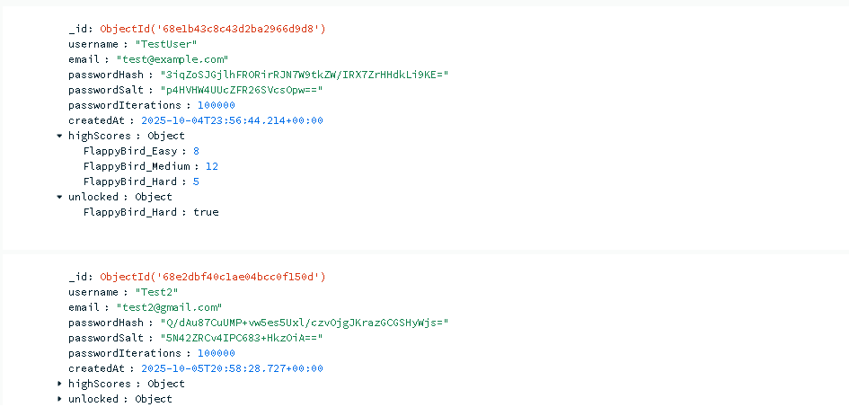

This enhancement introduced a cloud-based database system using MongoDB Atlas to add user authentication and persistent data storage. The application now features a Login/Register system, saves each user’s progress to the cloud, and records individual highscores for Easy, Medium, and Hard difficulties. This upgrade significantly improved functionality and scalability, showcasing the integration of database management and application logic. The button below allows you to download the updated artifact at this stage of development.
Login FormRegister Form
Click the images to make them bigger !
The button below lets you download the latest version of the artifact, the one with all the previous enhancements until now
For this enhancement, I integrated MongoDB Atlas, a cloud-based database solution, to introduce persistent data storage and authentication features to the application. Upon launching the program, users are now prompted with a Login/Register form that verifies credentials before granting access to the main application. Each user’s progress, including high scores and unlocks, is securely stored in a MongoDB cluster I created. The game now maintains individual highscores for each difficulty level — Easy, Medium, and Hard — and tracks whether the user has unlocked Hard mode.
Looking ahead, I plan to expand the database functionality by adding features like achievements, skins, milestones, in-game currency, and a shop system. These additions would bring a more engaging and rewarding experience for players and expand the overall scope beyond just Flappy Bird, which has been my main focus so far.
Throughout this enhancement, I learned a lot about the process of integrating databases into desktop applications. Getting started with MongoDB was straightforward — creating an account, setting up a free cluster, and installing the necessary MongoDB driver in Visual Studio. The real challenge came in implementing it correctly and adapting my existing code to handle database operations. Once I began recognizing patterns and understanding the structure of database logic, it became intuitive and exciting to work with.
One major challenge I encountered was designing the system to handle separate highscores for each difficulty. Initially, all difficulties shared one highscore, which didn’t make sense for progression. I addressed this by modifying label behaviors, adding new UI indicators for the current difficulty, and ensuring each score was stored and retrieved correctly from the database. In the end, I was proud of the result — the database integration worked seamlessly, and I felt I had taken a big step forward in applying real-world software engineering concepts.
Databases & Difficulty
Below are the images showing how the data is being stored in our MongoDB cluster, very important to notice how passwords are alwas hashed and never stored in plain text.

Below you can see at the top-right corner how the difficulty is being displayed so the player knows which difficulty he is playing on, same with the highscore.
Course Outcomes
Outcome 1: Employ strategies for building collaborative environments that enable diverse audiences to support organizational decision making in the field of computer science
Outcome 2: Design, develop, and deliver professional-quality oral, written, and visual communications that are coherent, technically sound, and appropriately adapted to specific audiences and contexts
Outcome 3: Design and evaluate computing solutions that solve a given problem using algorithmic principles and computer science practices and standards appropriate to its solution, while managing the trade-offs involved in design choices
Outcome 4: Demonstrate an ability to use well-founded and innovative techniques, skills, and tools in computing practices for the purpose of implementing computer solutions that deliver value and accomplish industry-specific goals
Outcome 5: Develop a security mindset that anticipates adversarial exploits in software architecture and designs to expose potential vulnerabilities, mitigate design flaws, and ensure privacy and enhanced security of data and resources